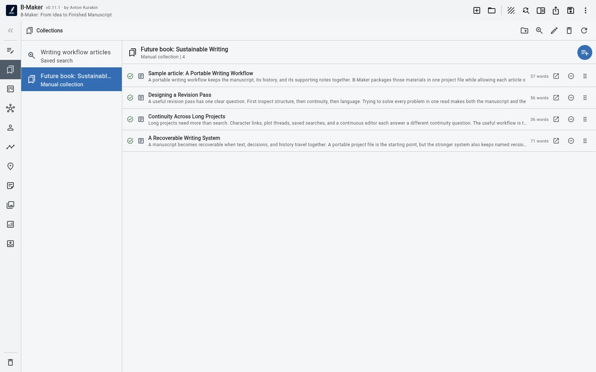
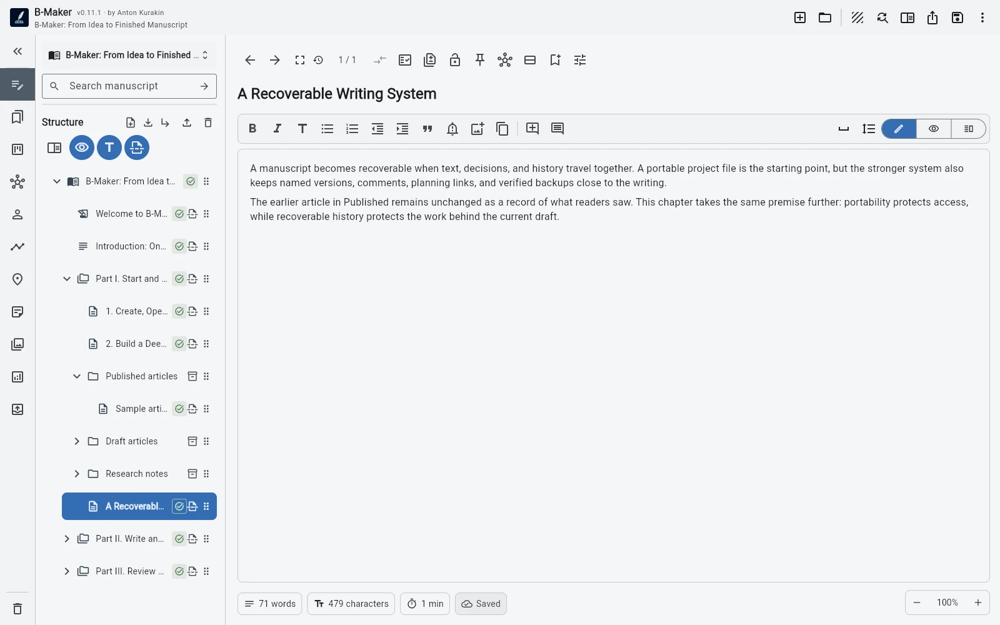

Write independent pieces first, keep their history and context, then reorganize the material into a book only when recurring themes and a larger structure become visible.
A book can begin before you call it a book
Many nonfiction projects do not begin with a table of contents. They begin with repeated interest in the same problem. One article becomes three. Three become ten. Some overlap, some contradict each other, and some contain the seed of a chapter that does not yet exist.
Forcing a complete book structure too early can create fake certainty. The opposite extreme is also painful: keeping every article as an isolated file means the accumulated material never quite becomes a project.
Step 1. Keep writing pieces as pieces
Create articles and drafts without pretending they are already chapters. Keep active work in Drafts and move finished pieces into an organizational folder such as Published. The archive stays searchable and available, but it does not have to appear in the final book export.
assets/img/bmaker/bmaker-story-articles-01.webpStep 2. Watch for repetition
After enough writing, patterns appear. Several articles may repeat the same introduction. Different examples may support one larger argument. A topic that felt independent may turn out to be one chapter in a broader story.
At this stage you are not starting from a blank outline. You are looking at real material and asking what structure it suggests.
Step 3. Reorganize attention before reorganizing the manuscript
Collections and saved searches let you gather related pieces without moving the underlying material immediately. Build a temporary set around one theme, one audience, or one future chapter and see whether the grouping makes sense.
This is useful because exploratory structure should remain cheap. You can test several ways of grouping the same material before deciding what the actual manuscript order should be.

Step 4. Build the book from what survived
Once the larger structure becomes convincing, create the real manuscript hierarchy. Some articles may become chapters almost directly. Others may be split across several sections. Some will only contribute one paragraph. Some will remain in Published as useful background but never enter the book.
This is the important distinction: a book is not simply a folder containing articles. It needs a new sequence, transitions, less repetition, and a stronger overall argument. B-Maker keeps the source material nearby while you do that transformation.
Step 5. Preserve the history instead of flattening it
The published article can stay as it was while the book chapter gets a new version and evolves in another direction. Notes, comments, research, and earlier drafts do not have to disappear just because the material has acquired a second life.

Why this matters
The workflow removes a false choice between “I am writing articles” and “I am writing a book.” You can publish useful work now and still preserve the possibility that a larger structure will emerge later.
The book does not need to be planned before the first useful page exists. It can become the result of sustained writing, not the entry requirement for it.
Related guides
Turn articles into a book · Writing software for articles and books · No more final-final.docx
Write the useful piece first.
If it becomes part of something larger later, the project is already ready for that.